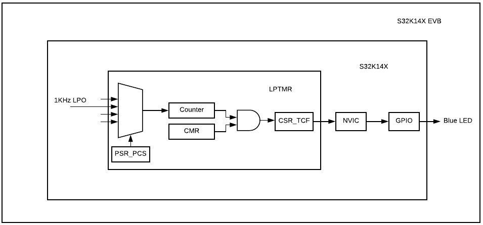

Description
This example uses Low Power Timer (LPTMR) counting at a 1KHz
an interrupt will be asserted every 500ms, the blue LED will
toggle every time the interrupt is asserted.

Design:
- Disable watchdog
- System clocks: Initialize SOSC for 8 MHz, sysclk for 80 MHz, RUN mode for 80 MHz
- Initialize PORT
- Select 1KHz LPO as clock source
- Bypass Prescaler
- Enable LPTMR timer
- Enable LPTMR
- Interrupt service routine:
- Clear LPTMR flag
- Toggle Blue LED
Pins definitions:
| Function | S32K116 | S32K118 | S32K142 | S32K144 | S32K146 | S32K148 |
| GPIO [BLUE LED] | PTE8 | PTE8 | PTD0 | PTD0 | PTD0 | PTE23 |
Driver Functions:
main.c
#include "device_registers.h"
{
PCC-> PCCn[PCC_PORTD_INDEX] = PCC_PCCn_CGC_MASK;
PTD->PDDR |= 1<<0;
PORTD->PCR[0] |= PORT_PCR_MUX(1);
}
{
WDOG->CNT=0xD928C520;
WDOG->TOVAL=0x0000FFFF;
WDOG->CS = 0x00002100;
}
{
S32_NVIC->ISER[(uint32_t)(vector_number) >> 5U] = (uint32_t)(1U << ((uint32_t)(vector_number) & (uint32_t)0x1FU));
S32_NVIC->ICPR[(uint32_t)(vector_number) >> 5U] = (uint32_t)(1U << ((uint32_t)(vector_number) & (uint32_t)0x1FU));
}
{
for(;;)
{
}
}
{
if(0!=(LPTMR0->CSR & LPTMR_CSR_TCF_MASK))
{
LPTMR0->CSR |= LPTMR_CSR_TCF_MASK;
PTD->PTOR |= 1<<0;
}
}
 1.8.15
1.8.15